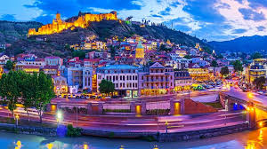

Tbilisi

Georgia's vibrant capital blends ancient architecture with modern lifestyle, featuring cobblestone streets, sulfur baths, and a picturesque old town.
Must-see: Narikala Fortress, Old Town, Sulfur Baths
Experience: Traditional Georgian supra (feast)